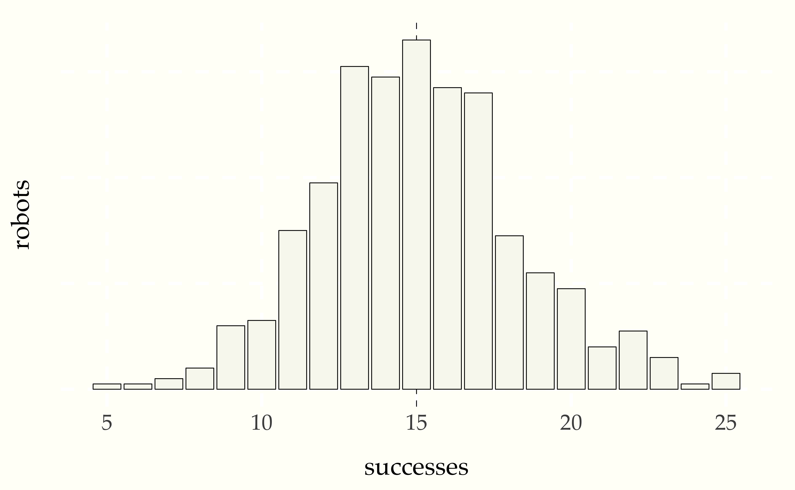
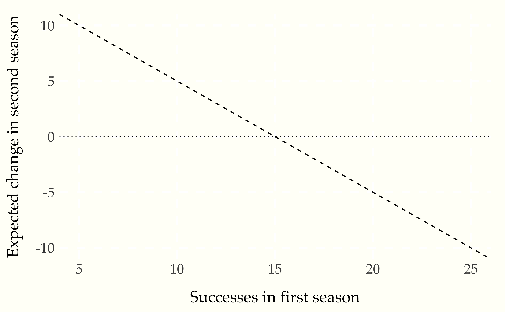

After a band puts out a great first album, it’s often followed by a less great second album. Bands seem to suffer from a kind of sophomore slump, in which they get worse after a first good effort.219 Used as an adjective, “sophomore” means the second of something. Although journalists and other onlookers like to make up explanations, we’ll see that there’s a good statistical reason that this should not be so surprising or need so much explanation. They’re just suffering what’s known as regression to the mean.
In 1886, Francis Galton was the first to notice the phenomenon and give it a name, when he moved from studying seeds to people, and wrote,220 Galton, Francis. 1886. Regression towards mediocrity in hereditary stature. The Journal of the Anthropological Institute of Great Britain and Ireland. 15:246–263.
When Mid-Parents are taller than mediocrity, their Children tend to be shorter than they. When Mid Parents are shorter than mediocrity, their Children tend to be taller than they.
Translating to modern English, Galton was saying that tall parents are likely to have children shorter than they are and short parents likely to have children taller than themselves. Galton called this “regression toward mediocrity,” with “mediocrity” denoting the median.221 In the kinds of roughly symmetric distributions with which Galton was working, the mean and median are roughly the same.
Galton went further and identified the factor by which this regression occurred, with a greater difference occurring the larger the parents deviated above or below the median.
We’re going to use simulation to demonstrate what regression to the mean looks like in a controlled situation. Let’s suppose we have \(N = 500\) robot athletes, all of whom have exactly the same chance \(\theta = 0.3\) of success.222 Imagine spiking serves, hitting baseballs, sinking putts, ringing horseshoes, bullseying darts, or curling stones to a mark; the chance of success is arbitrarily chosen to make the example concrete.
A season’s outcomes may be represented as a random variable \(U = U_1, \ldots, U_N\), where \(U_n \in 0:M\). Now let’s imagine we’re going to simulate a season in which each each robot athlete gets exactly \(M = 50\) chances,
\[ U_n \sim \mbox{binomial}(M, \theta). \]
In the time off between seasons, the manager decides that robots who had below average performance would have a better chance of success with a fresh coat of bright orange paint. Assuming the paint has no effect on the robots, who are only following programming. The second season’s outcome can be represented as a variable \(V = V_1, \ldots, V_N\), where
\[ V_n \sim \mbox{binomial}(M, \theta). \]
We can write a simulation as easily as
N = 500
M = 50
theta = 0.3
for (n in 1:N)
u[n] = binomial_rng(M, theta)
v[n] = binomial_rng(M, theta)Here’s a bar plot of the robots scores in the first season.
Figure 17.1: Histogram of first season robots for \(N = 500\) given \(M = 50\) attempts at a task for which they each have a 30 percent chance of success. The vertical dotted line is at the expected performance (\(N \times \theta = 15\)).
One way to evaluate whether the treatment had any effect is to look at the painted robots and see if their level of success improved on average after the paint job. This requires retrieving the difference in successes for each of the repainted robotos. We have assumed the robots that performed worse than average were repainted.
repainted = (u < 15)
improvement = v[repainted] - u[repainted]
print 'average improvement of repainted robots = ' mean(improvement)The value of the expression u < 15 is the sequence of indexes for
values of u that are less than fifteen. Thus u[repainted] picks
out those values that are less than fifteen in the original season,
and u[repainted] the corresponding performances in the second season
(which may be greater than fifteen).
Running this gives us
average improvement of repainted robots = 2.8We can see that the new paint job really gave those underperforming robots a boost in spirit. Now let’s see what happened to the robots who performed at or above average in the first season and were thus left with their original paint job.
oldpaint = (u >= 15)
decline = v[oldpaint] - u[oldpaint]
print 'average decline of unrepainted robots =' mean(decline)Now let’s run it.
average decline of unrepainted robots = -2.2The average performance of the unrepainted robots went down. Maybe they were jealous of the repainted robots?
All that’s really going on is an effect known as regression to the mean. Suppose a robot athlete had 10 successes in the first season. That’s pretty unlucky, because it’s well below the expectation of 15 successes. In general, if \(U_n\) anv \(V_n\) have the same distribution and
\[ \mathbb{E}[U_n] \ = \ \mathbb{E}[V_n], \]
as it does in our robot athlete example, then if the result of the first season is \(U_n = m\) successes, the average change expected in the second season is
\[ \mathbb{E}[V_n - m] \ = \ \mathbb{E}[V_n] - m. \]
For example, a robot athlete with 10 successes in the first season still has a 30% chance of success and an expected number of successes equal to 15 in 50 attempts. Thus we expect an improvement of 5 successes in the second season. Similarly a robot with 18 successes in the first season is expected to decline in the second season by 3 successes. We can summarize the expected decline with a plot.
Figure 17.2: Expected change in performance in second season based on first season performance for robots with 30 percent chance of success in 50 attempts. The horizontal dotted line is at zero, or no change year over year, and the veritical line is at the expected number of successes. Any robot with fewer than the expected number of successes is expected to improve with no treatment, whereas one with more than the expexted number of successes is expected to decline.
So while it may look like there is an improvement due to painting the underperforming robots, this is attributable entirely due to the regression to the mean effect.